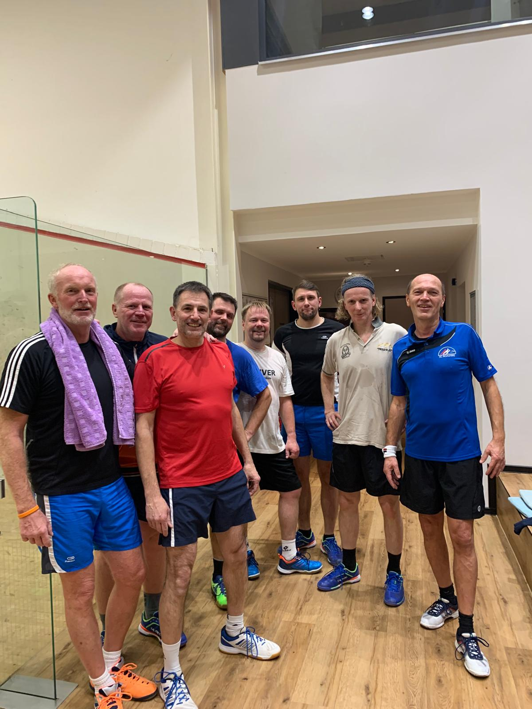
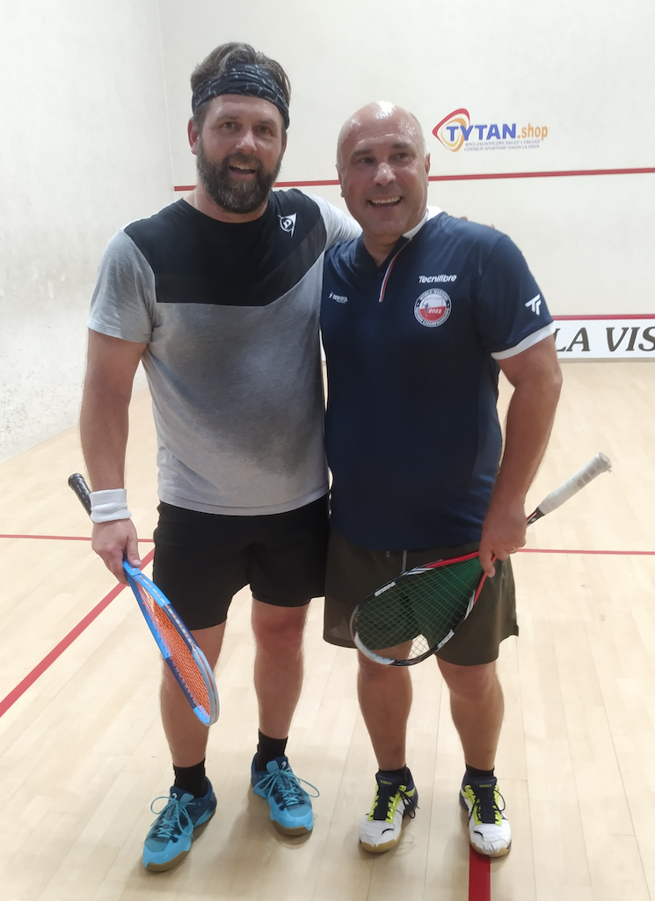
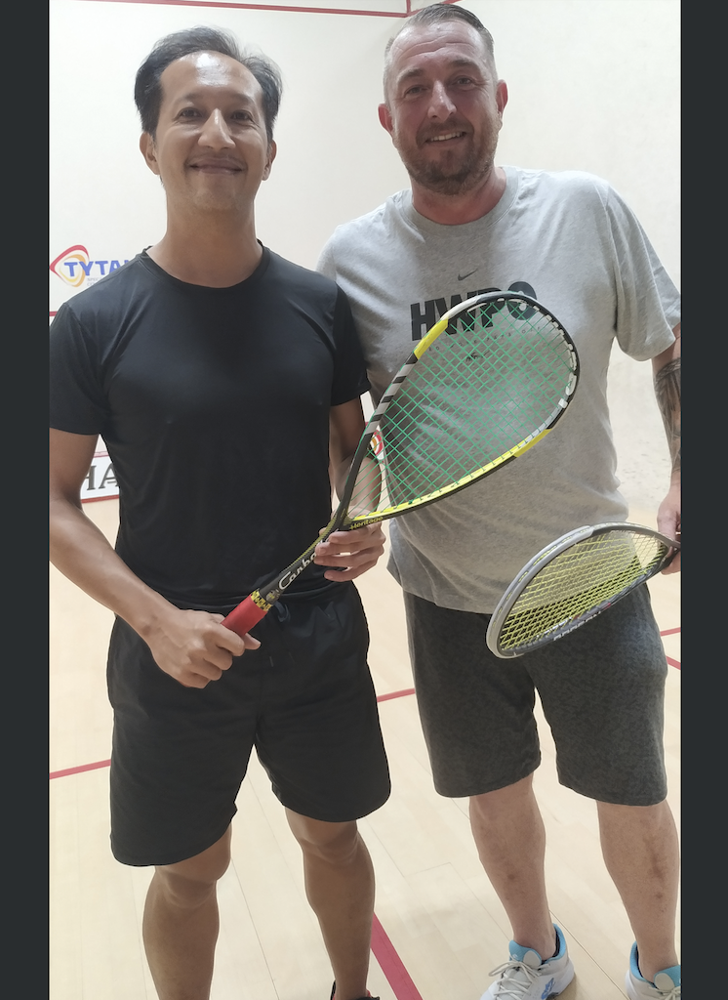
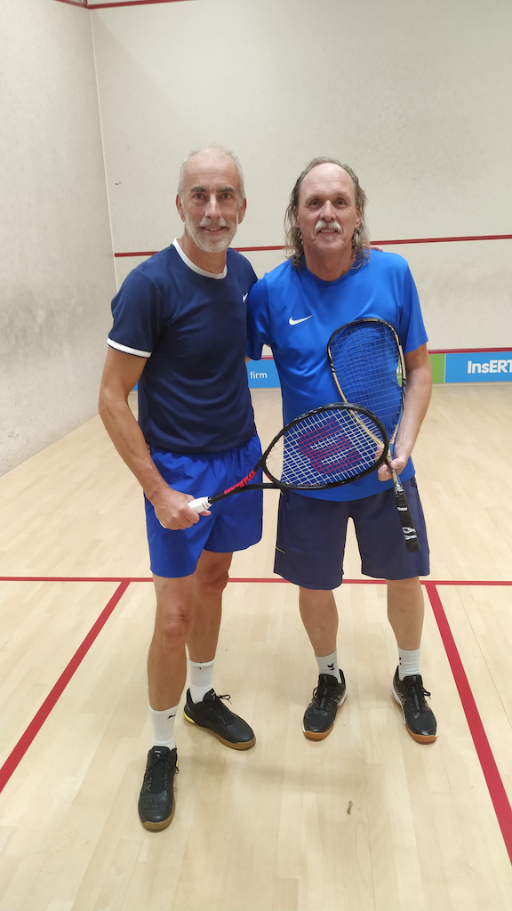
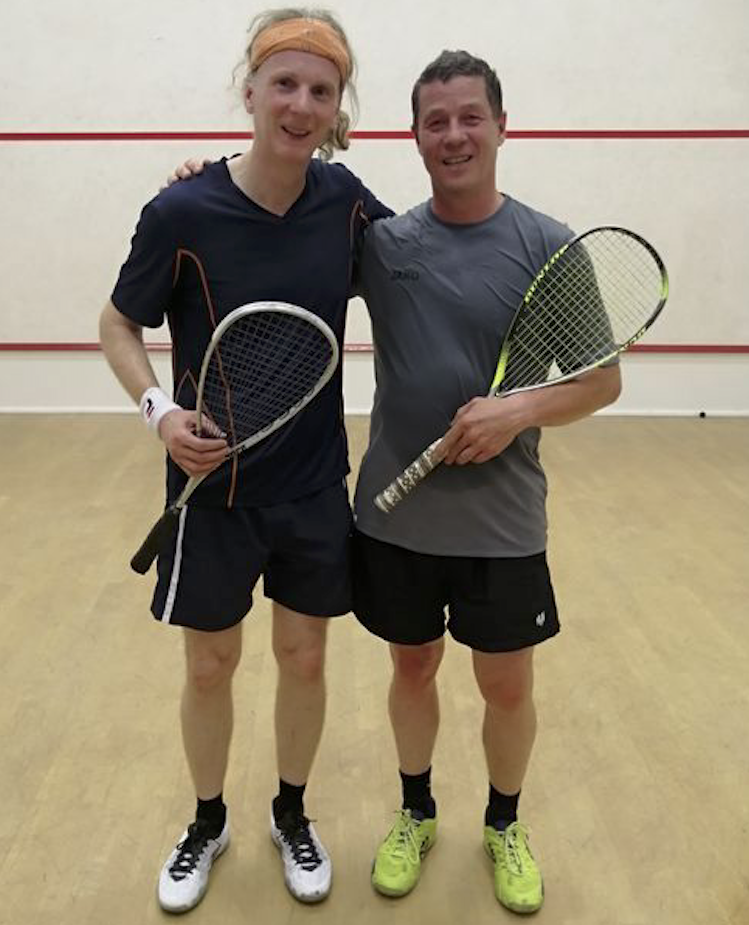
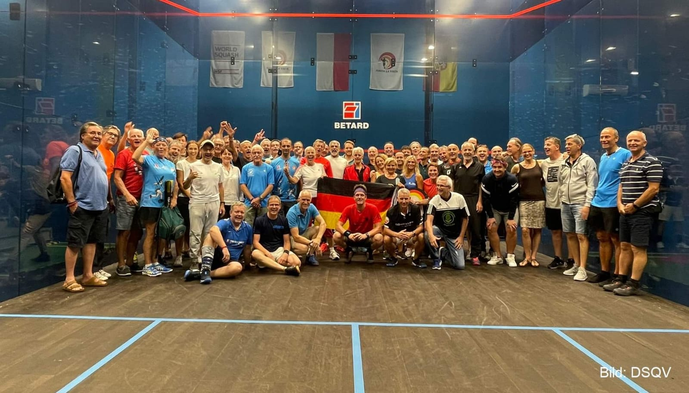
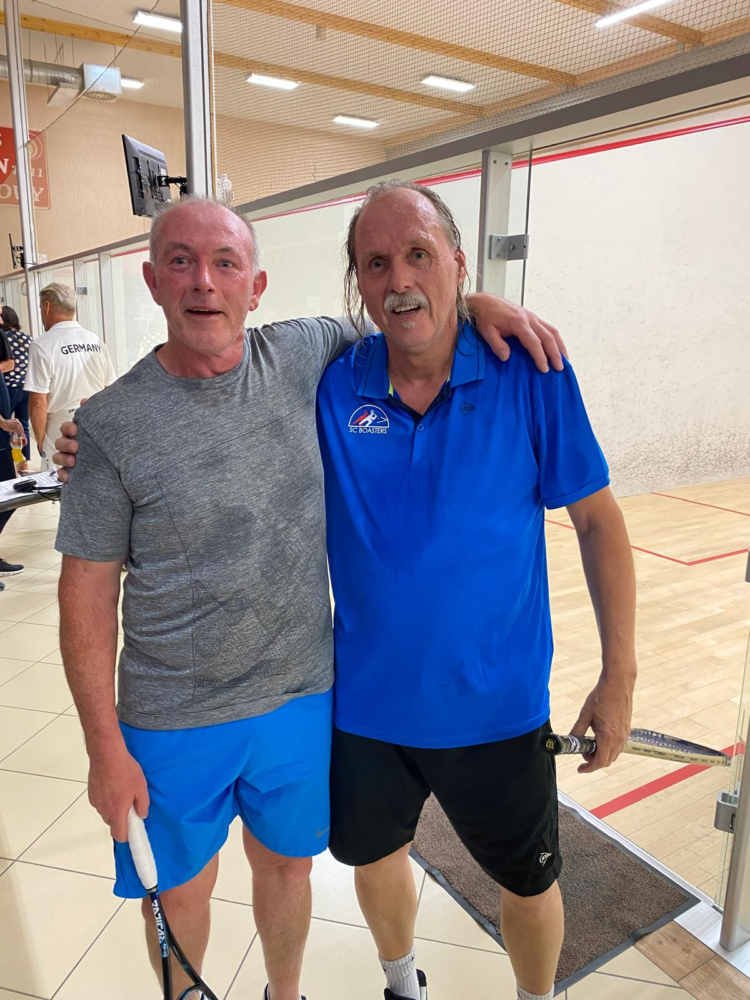
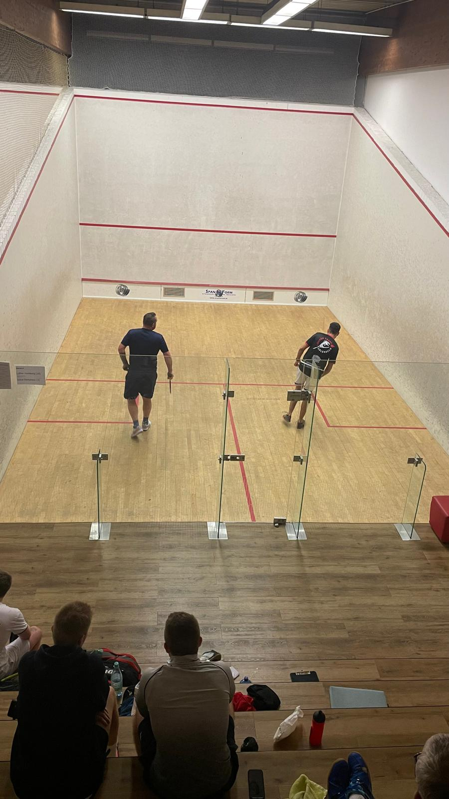

Ein kleiner, ambitionierter Verein für alle, die Squash so lieben wie wir: schnell, direkt und mit vollem Einsatz.
Der SC Boasters Bochum ist kein großer Verein — und genau das macht uns aus. Wir sind eine kleine, eingeschworene Gruppe, die sich einmal wöchentlich auf dem Court trifft, hart trainiert und sich danach genauso ernst über ein Bier austauscht. Egal ob du seit Jahren spielst oder gerade erst anfängst: Bei uns findest du schnell Anschluss.
Vier Gründe, warum uns dieser Sport nicht mehr loslässt.
Der Ball erreicht Spitzengeschwindigkeiten von über 200 km/h. Reaktionsvermögen ist alles.
Wenig Sport trainiert Ausdauer, Kraft und Beweglichkeit so effizient auf so kleiner Fläche.
Jeder Punkt ist Schach in Bewegung — Positionierung und Spielintelligenz entscheiden.
Wir trainieren gemeinsam, spielen gegeneinander und feiern danach zusammen.
Alle Level willkommen — vom ersten Schläger in der Hand bis zur Regionalliga.
Komm einfach vorbei — Schläger und eine kurze Einführung stellen wir für den ersten Termin.
ZUM TRAINING KOMMEN →Anfänger willkommen.
Das Sportforum bietet Squash als festen Bestandteil seines Racketsport-Angebots — direkt erreichbar und bestens ausgestattet.
KARTE ÖFFNENUnsere Seniorenmannschaft tritt in der NRW Regionalliga an — hart erkämpft, Spiel um Spiel. In der Saison 2024/25 sind wir Vizemeister geworden.
Neben der Regionalliga nehmen unsere Mitglieder auch aktiv an nationalen und internationalen Turnieren teil. Im Master-Bereich (Altersklassen) sind wir bei NRW-Meisterschaften, Deutschen Meisterschaften, Europameisterschaften und Weltmeisterschaften vertreten.








Mit rund 20 Mitgliedern kennt bei uns jeder jeden. Kein anonymer Großverein, sondern eine Gruppe, in der neue Gesichter schnell zu Freunden werden — auf dem Court und danach.
Der SC Boasters Bochum ist ein Verein aus Bochum — trainiert wird im Sportforum Castrop-Rauxel. Dank der zentralen Lage im Ruhrgebiet sind wir auch für Spieler aus den Nachbarstädten gut erreichbar.
Als Verein aus Bochum sind wir der naheliegende Anlaufpunkt für alle, die in der Stadt Squash spielen möchten. Training, Mannschaft und Regionalliga-Spielbetrieb findest du weiter oben auf dieser Seite.
Du suchst Squash in Dortmund? Wir trainieren mittwochs ab 18:00 Uhr im Sportforum Castrop-Rauxel — aufgrund der Lage im westlichen Ruhrgebiet für Dortmunder Spieler gut zu erreichen.
Für Spieler aus Essen liegt das Sportforum Castrop-Rauxel im östlichen Ruhrgebiet — gut mit Auto oder Bahn zu erreichen, direkt an unserem Mittwochstraining teilzunehmen.
Im östlichen Ruhrgebiet ist Squash seltener zu finden. Der SC Boasters Bochum bietet Spielern aus Unna eine feste wöchentliche Trainingsmöglichkeit im Sportforum Castrop-Rauxel.
Als Teil der Squash-Szene im Ruhrgebiet bringt der SC Boasters Bochum Spieler aus verschiedenen Städten der Region auf einem gemeinsamen Court zusammen.
Mit unserer Herrenmannschaft in der Regionalliga sind wir auch innerhalb der westfälischen Squash-Struktur aktiv und treten regelmäßig gegen Vereine aus der Region an.
Squash wird in Nordrhein-Westfalen in mehreren Ligen gespielt, unter anderem in der Regionalliga. Der SC Boasters Bochum ist einer dieser Vereine und versteht sich als Teil dieser Squash-Landschaft — offen für Spieler aus ganz NRW, die einen Verein mit persönlicher Atmosphäre suchen.
Was sich bei uns auf und neben dem Court tut.
Unsere Herrenmannschaft geht in eine neue Saison — mit neuem Kader und großen Zielen.
Heimspiele finden im Sportforum Castrop-Rauxel statt — Unterstützung ist immer willkommen.
Komm mittwochs vorbei — wir zeigen dir die Grundlagen, Schläger inklusive.
Das Wichtigste zu Verein, Training und Probestunden.
Der SC Boasters Bochum trainiert mittwochs ab 18:00 Uhr im Sportforum Castrop-Rauxel.
Ja. Der SC Boasters Bochum ist ein Squashverein mit rund 20 Mitgliedern und einer Herrenmannschaft in der Regionalliga.
Ja, komm einfach mittwochs zum Training im Sportforum Castrop-Rauxel vorbei. Für den ersten Termin stellen wir Schläger und eine kurze Einführung.
Der SC Boasters Bochum trainiert im Sportforum Castrop-Rauxel und ist damit gut aus dem westlichen und östlichen Ruhrgebiet erreichbar, unter anderem aus Bochum, Dortmund, Essen und Unna.
Ja, Squash wird in NRW unter anderem in Ligen wie der Regionalliga gespielt. Der SC Boasters Bochum ist einer dieser Vereine und tritt selbst in der Regionalliga an.
Schreib uns oder komm einfach mittwochs vorbei — wir freuen uns auf dich.
KONTAKT AUFNEHMEN →